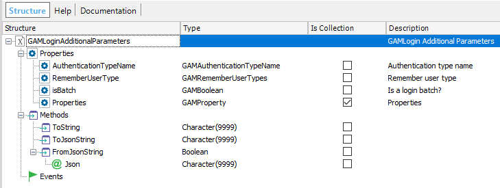
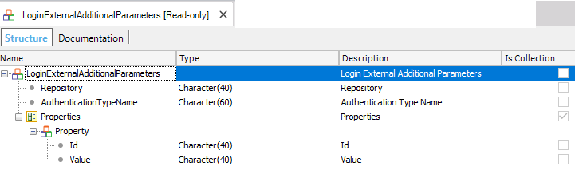

GAM Login Method for web applicationsTake the GAMExampleLogin object as an example where the GAMRepository Login method is used. The Login method of the GAMRepository object receives the following parameters:
GAMLoginAdditionalParameters is an external object (which is part of the GAM library also), defined as follows:  The property AuthenticationTypeName allows you to determine the name of the GAM Authentication Type to be used in the login (unless it is GAM Local Authentication Type where this property can be empty).
Event 'login'
&AdditionalParameter.AuthenticationTypeName = !"Facebook"
&LoginOK = GAMRepository.Login(&UserName, &UserPassword, &AdditionalParameter, &Errors )
EndEvent
Besides, the Properties collection can be used to send custom properties to the login. See HowTo: Pass additional parameters to external authentication programs using GAM. GAMLoginAdditionalParameters also has a property named "isBatch" which allows you to check the username and user password, without creating a session, that is, without logging in. See the code below: &AdditionalParameter.AuthenticationTypeName = !"Custom" &LoginAdditionalParameters.isBatch = TRUE // Login User &LoginOK = GAMRepository.Login(&UserName, &UserPassword, &AdditionalParameter, &Errors ) If not &LoginOK // Process Error EndIf GAM Login Method for SD applicationsFor Smart Devices applications, take as an example de GAMSDLogin object. Login methodIn this case, Local login is performed using the Actions external object, and the login method.
Event 'GXLogin'
Composite
GeneXus.Common.UI.Progress.ShowWithTitle("Connecting...")
GeneXus.SD.Actions.Login(&User, &Password)
GeneXus.Common.UI.Progress.Hide()
Return
EndComposite
EndEvent
The login method is overloaded, so it can include an extra parameter called &LoginExternalAdditionalParameters. The LoginExternalAdditionalParameters object is as follows:  Example:
Event 'GXLogin'
Composite
GeneXus.Common.UI.Progress.ShowWithTitle("Connecting...")
&LoginExternalAdditionalParameters.Repository = !"1e89a9ca-bc52-482b-a344-c4cda4a9cc8f"
GeneXus.SD.Actions.Login(&User, &Password,&LoginExternalAdditionalParameters)
GeneXus.Common.UI.Progress.Hide()
Return
EndComposite
EndEvent
In the case of the SD login method, the LoginExternalAdditionalParameters allows to establish the Repository GUID to which to connect to. It's useful when there is more than one GAM Repository Connection in the connection.gam file on the server. Given a value to the Repository property of the &LoginExternalAdditionalParameters parameter, you can establish the connection to use (any connection in the connection.gam which refers to this Repository GUID). LoginExternal methodWhen using any Authentication type other than Local, the LoginExternal method should be used. There you specify the Authentication Type using the GAMAuthenticationTypes domain. The method is overloaded so you can also specify the name of the Authentication Type in case you have more than one equal Authentication Type. You can specify the Repository Id as well. Including the &LoginExternalAdditionalParameters is optional. For example, in the case of GAM Remote Authentication Type, consider that you have more than one in the Repository:
Event 'GAMRemote'
Composite
&LoginExternalAdditionalParameters = new()
&LoginExternalAdditionalParameters.AuthenticationTypeName = !"my_custom_gam_remote_auth" //Use only when more than one GAMRemote authentication type
GeneXus.SD.Actions.LoginExternal(GAMAuthenticationTypes.GAMRemote, &User, &Password, &LoginExternalAdditionalParameters)
Return
EndComposite
Endevent
Related informationSee also
|